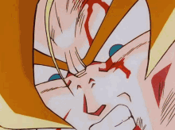
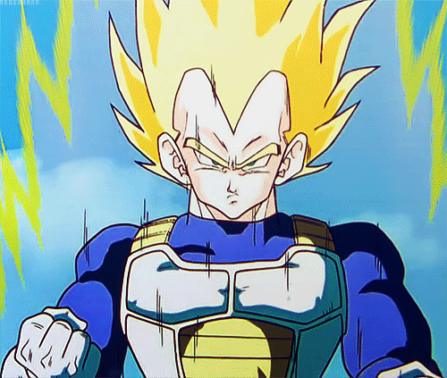
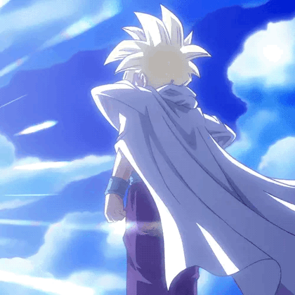
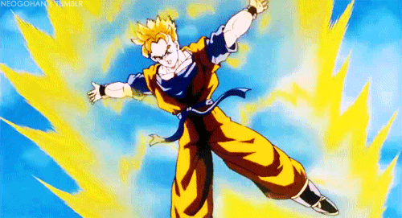
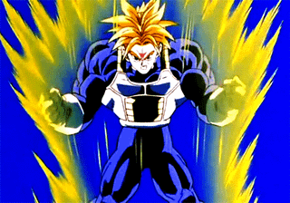
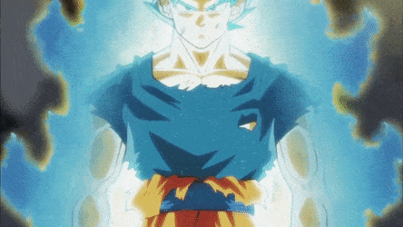

| Inicio | Figuras | Curiosidades | Contacto | Opinión |
|  | Goku Super Saiyan (Saga Namek): Fue el primer Saiyan en alcanzar esta transformación legendaria en más de mil años. |
|  | Vegeta Super Saiyan (Saga Androides): Logró transformarse gracias a su orgullo y una intensa sesión de entrenamiento en el espacio. |
|  | Gohan Super Saiyan (Saga de Cell): Superó a todos al alcanzar el nivel 2, venciendo a Cell cuando nadie más pudo hacerlo. |
|  |
Gohan del Futuro Super Saiyan: En su línea de tiempo fue el único guerrero Z que sobrevivió a los Androides. |
|  | Trunks Super Saiyan: Hijo de Vegeta y Bulma, logró esta forma después de ver morir a Gohan del Futuro. |
 |
Goku Super Saiyan 4: Esta forma aparece exclusivamente en Dragon Ball GT y combina el poder del Ozaru con forma humana. |
 |
Goku Super Saiyan Blue (Película Broly): Este nivel combina el poder de Super Saiyan con el ki divino del Super Saiyan God. |
 |
Gogeta Super Saiyan Blue (Dragon Ball Super: Broly): Su aparición fue tan poderosa que obligó a Broly a retirarse con la ayuda de Shenlong. |
 |
Vegeta GT (Super Saiyan 4): A diferencia de Goku, Vegeta alcanzó esta transformación usando un generador especial de ondas Blutz creado por Bulma, sin necesidad de transformarse en Ozaru dorado. |
 |
Goku Super Saiyan God: Gracias al ritual con cinco Saiyans de corazón puro, Goku alcanzó por primera vez este nivel divino durante su combate contra Bills, el Dios de la Destrucción. |
 |
Goku GT: Tras el deseo de Pilaf, Goku vuelve a ser niño, pero conserva su enorme poder y recorre el universo buscando las Esferas del Dragón Oscuras. |
|  | Goku Super Saiyan Blue: Aunque el Super Saiyan Blue es una combinación del poder de un Super Saiyan y el control del ki divino del Super Saiyan God, consume mucha energía si no se controla bien. Gracias a su entrenamiento con Whis, Goku logra usarlo de forma mucho más eficiente. |